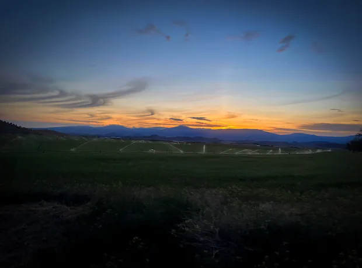

B947 · Early-Bird Pricing Ends in Less than 72 Hours
Hi {first_name},
Whether it be a deep meditation, retreat, plant medicine journey, or something else, we are often told, or assume, that transformation only happens during the experience itself.
However, I strongly believe that the journey to transformation begins long before the actual event and continues well after it's over.
Allow me to explain why...
Transformation is a deep, profound process, and it starts from that pivotal moment when we decide to take a step towards change.
 It's that first conscious step that sets everything in motion. And to maximize the potential of any transformative experience, I've come to understand four crucial components:
And there is ONE more...
One that cannot be understated, and that is support - especially a solid group of brothers who have got your back.
That's why I'm excited about the kick off of The Path to Inspired Action, starting October 1st - a 6-10 week virtual coaching program exclusively designed for men who are ready to embark on a life-changing journey of transformation.
In less than 72 hours, the early price for this program will end, and I don't want you to miss out on this opportunity to take aligned, inspired action.
By participating in this Program you will:
Click here to apply and embark on this life-changing path - let's take this first step together!
I'm looking forward to seeing you in The Path to Inspired Action program!
Best regards, Mike
P.S. In my last email I shared a free gift with you - the morning routine I've used regularly for the last ~4 years. It takes less than 10 minutes to do and is one of the routines in my program Kettlebell Lifestyle, which is included in the Elite Package of The Path to Inspired Action.
To get my morning routine for free, click here. |